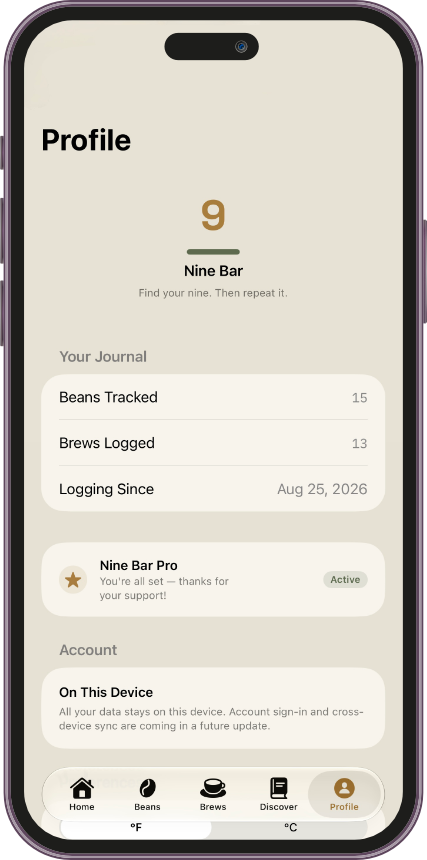

01
Freshness at a glance
See whether an In Stock bean is Resting, Peak, Good, or Past Peak.
Nine Bar 1.1 brings smarter bean tracking, richer brew logging, easier equipment setup, and the introduction of Nine Bar Pro.



The biggest changes make it easier to understand your beans, find what you're looking for, and log the drink in front of you.
See whether an In Stock bean is Resting, Peak, Good, or Past Peak.
Search your library and filter by roast, process, status, rating, and freshness.
Guided choices, better labels, and smarter handling for milk and iced drinks.
Remove bean and equipment limits and unlock the full Nine Bar experience.
The redesigned Home recap brings the bean, drink type, last-brewed context, and Log Again action together in one clear card.
Beans are now organized around the way a real coffee shelf changes, with freshness, search, filtering, and clearer status at the center.

Roast level, process, roast date, remaining weight, and freshness now read as one useful story about the bag in front of you.

The brew flow now adapts more closely to what you're making and what is actually available to brew.
Equipment selection now starts with how you brew, then narrows to the equipment type you use.
Nine Bar remains free to start. Pro removes the free-tier limits and provides access to Nine Bar's paid capabilities.
Version 1.1 also introduces a redesigned Beans tab icon and brings the updated Log Again presentation into a single, more consistent visual system.
Update Nine Bar on the App Store and bring more context to every bean, brew, and setup.
Update on the App Store